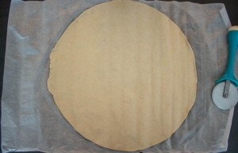
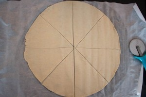
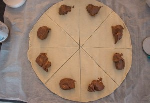
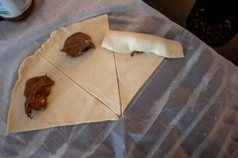
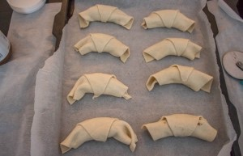

Croissant Nutella tout mini et tout mimi

Aujourd’hui on se retrouve pour une recette de croissant Nutella histoire de bien commencer la journée!
Le petit-déjeuner est parait-il le repas le plus important de la journée! Eh bien j’ai envie de vous dire que ce n’est pas passé d’un l’oreille d’une sourde! En effet le petit déjeuner est chez nous un repas sacré où souvent toutes les gourmandises sont les bienvenues! Cela faisait quelque temps déjà que je voulais vous parler de ces croissants au Nutella et vu le temps qu’il fait en ce moment (car oui toute cette grisaille à moi ça me donne envie de manger pleins de cochonneries bien caloriques!!) je pense que c’est le bon moment!
Il s’agit là d’une recette ultra rapide, ultra simple et ultra DÉLICIEUSE alors vous n’avez aucune excuse pour ne pas la faire à votre tour 😉 ! Ce petit croissant Nutella bien doré saura ravir petits et grands pour le petit-déjeuner ou encore pour le goûter!
Je sais bien que le nutella est rempli d’huile de palme et de pleins d’autres bêtises mais je pense que comme beaucoup je suis totalement addict de cette pâte à tartiner! J’ai décidé de me lancer très prochainement dans la réalisation de mon propre « Nutella » mais d’ici là je ne suis pas prête de m’arrêter d’en manger 🙂
C’est parti pour la recette et j’espère qu’elle vous plaira!
PS : Ne faites pas comme moi! N’oubliez pas de badigeonner vos croissants pour qu’ils soient bien dorés car moi ce matin là j’ai totalement oublié!!
Ingrédients
- Pâte feuilletée - 1
- Jaune d'oeuf - 1
- Nutella
Instructions
- Dérouler votre pâte feuilletée
- Couper la en 4 puis en 8
- Déposer du Nutella au bord de chaque triangle
- Rouler chaque triangle sur lui même
- Sur une plaque à pâtisserie mettre du papier sulfurisé
- Poser les croissants sur la plaque
- Badigeonner les de jaune d’œuf (oups j'ai zappé cette étape ce jour là!!)
- Enfourner à 180° pendant 20minutes (surveiller la cuisson car selon les fours ça varie quelque peu)
- A déguster tant que c'est encore chaud!





Les tips de la communauté
Recette rapide et facile très accueillie. Les lecteurs apprécient la praticité pour les petits déjeuners. Variantes véganes mentionnées et approuvées. Excellent pour gagner du temps le matin.
Astuces
- Recette très rapide à préparer pour le petit-déjeuner
- Peut être préparée la veille et réchauffée le matin
- Utiliser de la pâte feuilletée Picard pour les meilleurs résultats
- La pâte feuilletée est mieux que la pâte brisée pour ce plat
Variantes suggérées
- Version végane avec margarine et pâte à tartiner végane approuvée
- Utilisation possible d'autres pâtes à tartiner
Ajustements signalés
- La pâte feuilletée Marie ne donne pas le même rendu que Picard